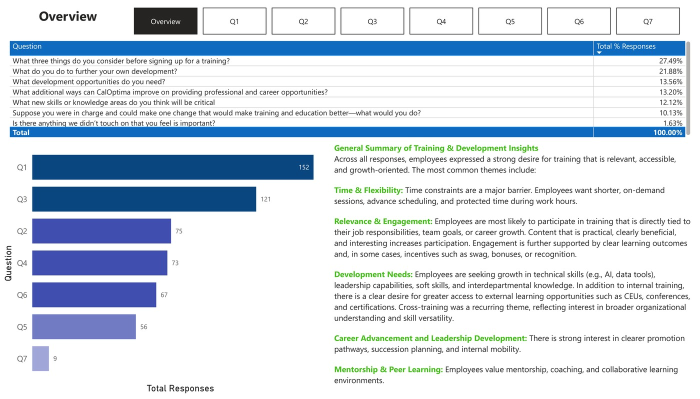
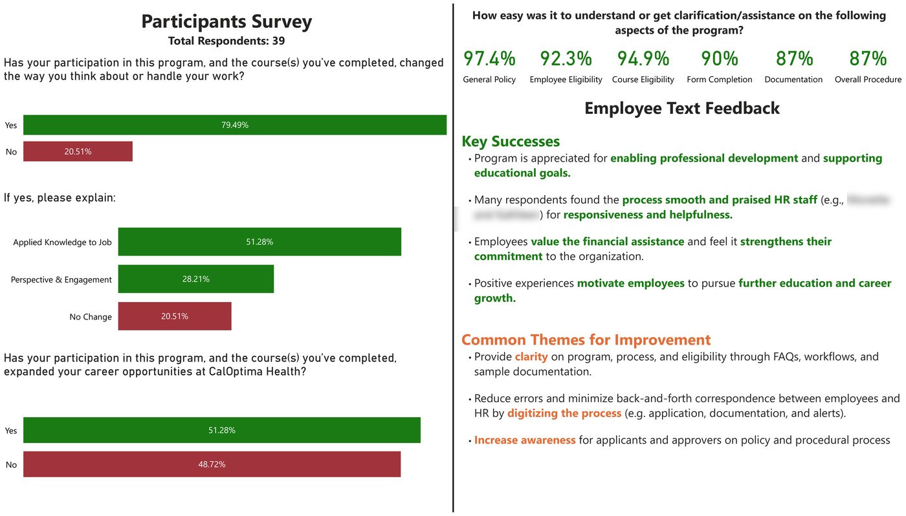

Professional Work
HR Training & Development Analytics
Power BI dashboards and survey analysis built to track participation, completion, and effectiveness across CalOptima Health's employee training program, and to translate training-needs and education-reimbursement survey data into actionable recommendations.
- 94 trainings
- 2,953 registrations
- 787 employees
- 61 survey respondents
Tools used:
Context
CalOptima Health runs an internal professional-development program spanning dozens of departments (Case Management, Customer Service, PACE, Utilization Management, Human Resources, and more) delivered through a mix of internal trainers and outside vendors (UMass Global, Aetna EAP/RFL, Dale Carnegie). Alongside it, the organization offers an education reimbursement benefit that helps employees pursue outside coursework and certifications.
This was internal HR analytics work at CalOptima Health, not a personal or academic project. The training program, its policies, and its curriculum belong to CalOptima's HR department. My role was to build the reporting and analysis that gave HR leadership visibility into how the program was performing.
Business & reporting need
HR needed a consolidated view of training activity: who was signing up, which departments and vendors were driving participation, and how completion rates trended over time and by course category, instead of piecing it together from separate exports. Separately, leadership wanted to understand, in employees' own words, what kind of training people actually wanted and how well the education reimbursement program's forms and process were working.
My role
- Built the Power BI dashboards analyzing 94 trainings, 2,953 registrations, and 787 employees to track participation, completion rates, departmental coverage, course trends, and program performance.
- Analyzed training-needs survey responses and education-reimbursement survey data (61 total respondents across leader and participant surveys), coding open-ended answers into themes and translating quantitative and qualitative results into recommendations for program access, career development, and process improvement.
- Automated recurring Excel reporting with Power Query and documented the transformation logic, validation steps, and reporting procedure so the analysis could be rebuilt and reused.
Course design, vendor selection, and program policy were HR department decisions, not mine. My part was the analytics layer: building the dashboards, coding the survey data, and packaging findings for stakeholders.
Data & reporting scope
| Metric | Value |
|---|---|
| Total trainings | 94 |
| Total registrations | 2,953 |
| Distinct employees | 787 |
| Training-needs survey responses (Q1–Q7 combined) | 553 |
| Education reimbursement survey respondents | 61 (22 leaders + 39 participants) |
Training records spanned multiple vendors and internal courses across roughly 15 departments and 8 employee levels (individual contributor through executive). All figures shown are internal HR program analytics; no patient, member, or protected health information is involved.
Approach
- Consolidate training registration and completion records by vendor, department, and employee level
- Build a filterable Power BI dashboard (department, vendor, course category, year)
- Collect open-ended training-needs and reimbursement survey responses
- Code open-ended responses into themes and quantify response share per theme
- Translate findings into recommendations and present to stakeholders
Recurring exports were automated with Power Query so the underlying tables could refresh without manual rebuilding, with transformation logic documented for reuse.
Visuals
Visuals below are internal HR program dashboards and survey summaries, shown as originally produced.

The core Power BI view HR used to monitor the program: total trainings, registrations, and distinct employees at a glance, with completion-rate trends and department-level breakdowns available through filters.
{kind=link}

553 open-ended responses across 7 questions, coded into themes. The two largest questions (what employees weigh before signing up, and what they do for their own development) made up about half of all responses, and pointed to time/flexibility and content relevance as the biggest factors in participation.
{kind=link}

39 participants rated the reimbursement program's clarity at 87–97.4% across six process aspects, and 79.5% said it changed how they think about or handle their work. Two staff names in an open-text comment are blurred to protect their privacy.
Results & operational value
94 trainings, 2,953 registrations, and 787 employees were tracked in a single reusable dashboard, replacing manual, one-off reporting with a filterable view HR could use on an ongoing basis.
These are the dashboard's and surveys' own outputs: completion rates, response percentages, and theme frequencies drawn directly from CalOptima's training data. They describe what the analysis found, not a claim about revenue, cost savings, or retention outcomes, which were not measured as part of this work.
The training-needs analysis and reimbursement survey coding gave HR a structured, thematic view of employee feedback, instead of hundreds of individual free-text comments, that could be used directly in recommendations for program access, career development, and process improvement.